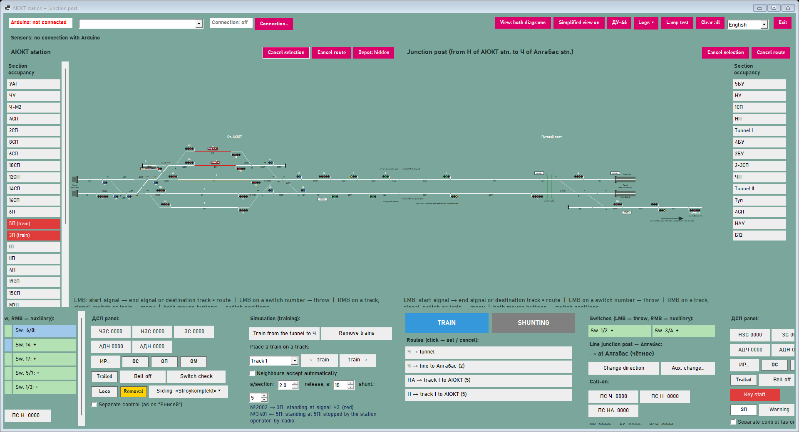
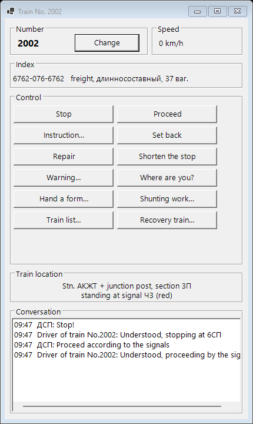
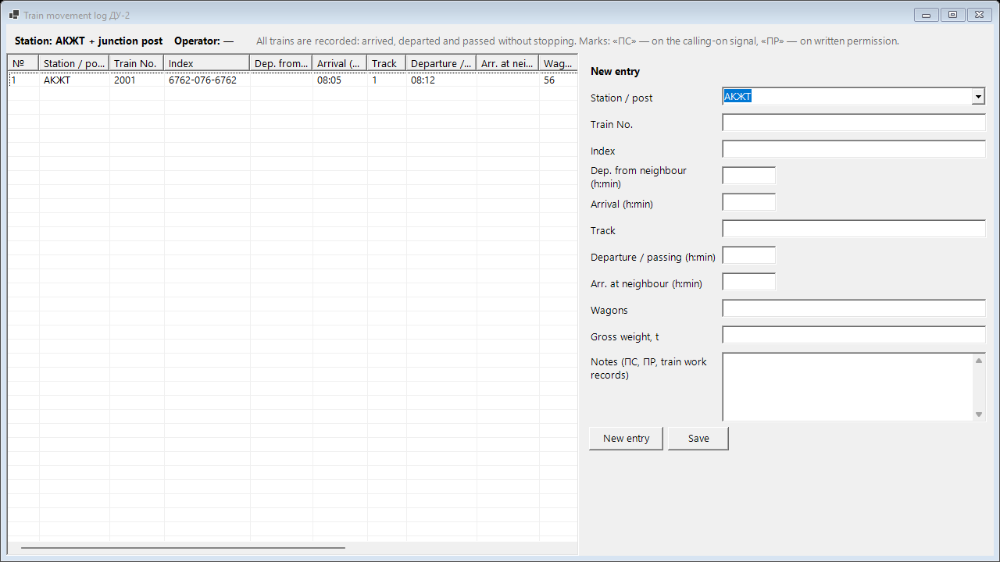
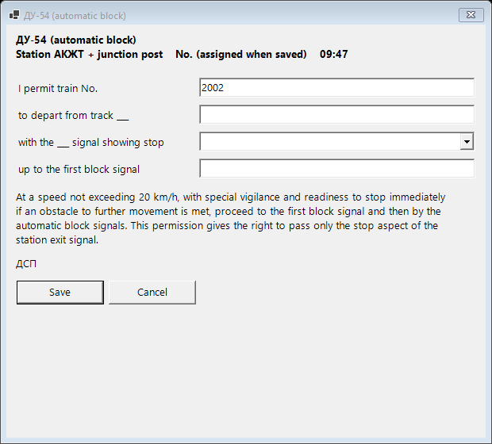
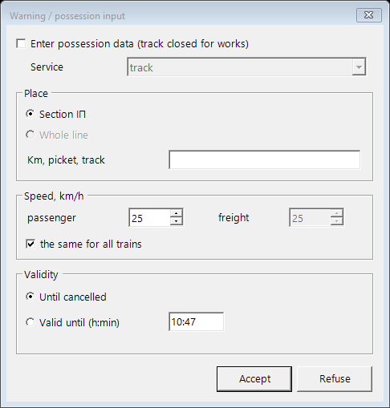
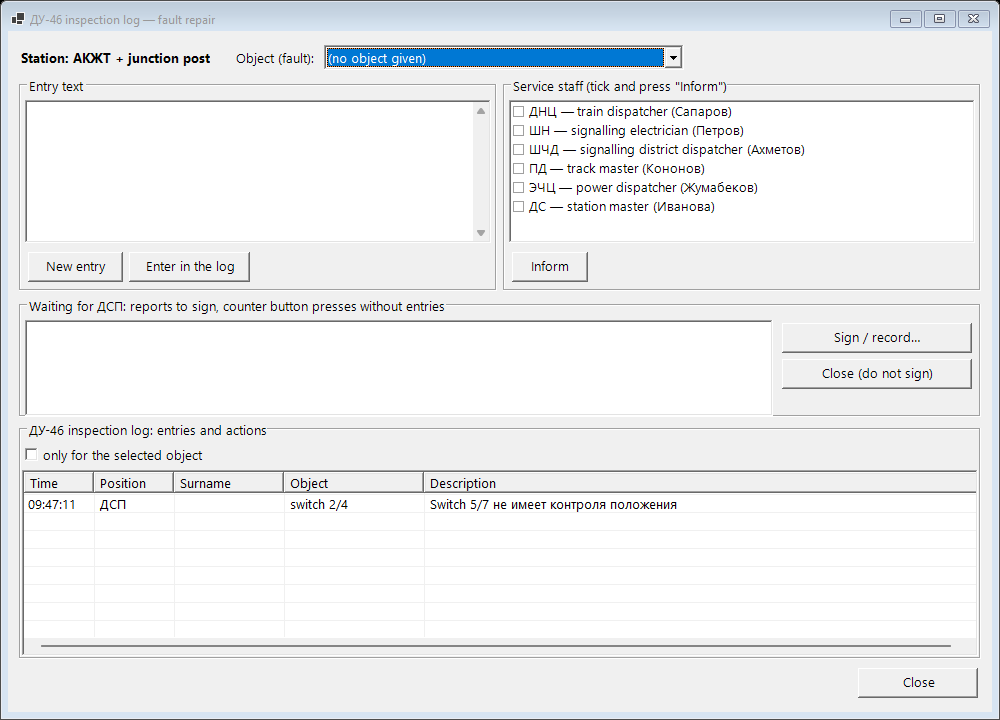
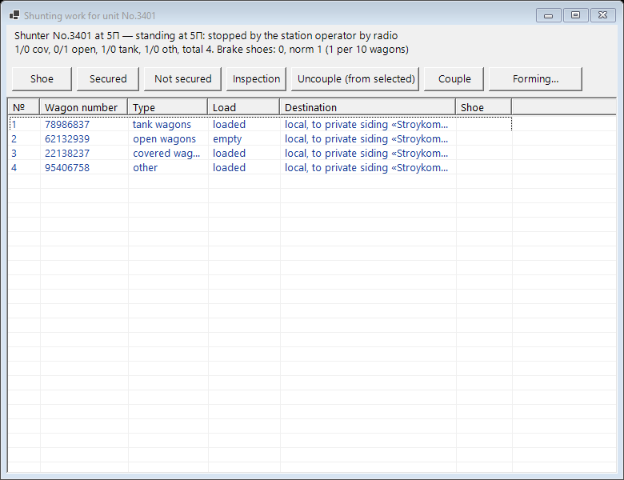
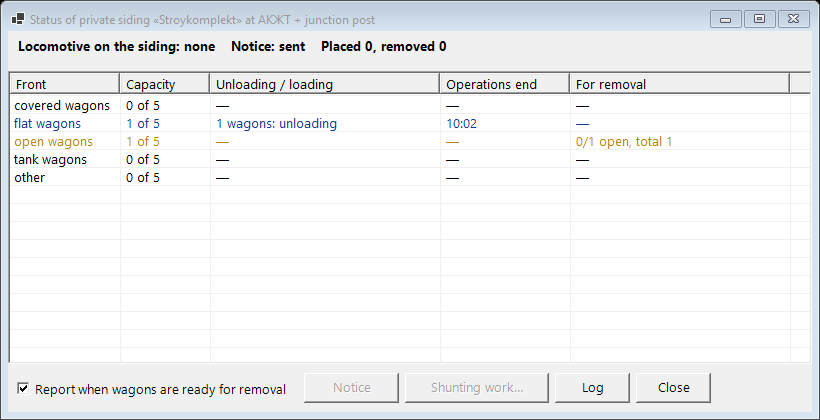

Student guide
Station operator (ДСП) trainer: АКЖТ station, the junction post and Алгабас station. For those working at a station panel.
1. Getting started
- Start your station program:
АКЖТ\Station.exe(АКЖТ station and the junction post) orАлгабас\Algabas.exe. The teacher tells you which one. - Press Connection…, type the teacher's computer address (shown in the teacher program, e.g.
192.168.8.27) and press Connect. The address is remembered. - A dark lesson bar appears above the panel. Press Log in, choose yourself and enter your password if you have one. Not in the list — I am not on the list… (if the teacher allows registration).
- When the teacher starts the lesson, the bar shows its name and the game time. The Task button shows what to do and the violations so far.
- While the teacher keeps the time paused, the panel does not accept commands.
2. The station window

- Top bar: layout (Arduino) status, Connection…, View, Simplified view on (large signals), ДУ-46, Logs ▾, Lamp test, Clear all, language, Exit.
- Diagram: tracks, switches (yellow numbers), signals, trains (blue labels «No.2002 →»). The line under the diagram explains whatever is under the mouse.
- Section occupancy — the side table: red — occupied, yellow — locked in a route.
- Bottom columns: «Switches», «Operator panel», «Simulation» (place a train, remove trains, speed) and the route list with the TRAIN / SHUNTING switch.
- Interface mode — the Settings button on top: Engineering (everything, for setting up the model), Training (for lessons: no occupancy list or setup buttons), Working (like the ДСП workstation of Medeu station: large diagram, clock, ДСП panel as a strip on top, TRAIN / SHUNTING below; no simulation or manual occupancy — for work with the model), Pavlodar (grey diagram with the «Енисей» push-button panel below: start and end signal buttons, switches «+ № −», track buttons — destination or ИР). In the same window any panel can be shown or hidden with checkboxes; the choice is remembered.
- AI assistant — the ЖИ button on top (in the training and Pavlodar modes the window opens by itself). Ask in Russian or Kazakh: «как задать маршрут», «маршрут Н на путь 3» (the answer is step by step: what to click, which switches move, which sections must be free, whether it can be set now), «для чего светофор Н1». Point the mouse at a signal and ask «что это?». When the program refuses (red line in the log), a hint appears in the AI window by itself.
3. Routes and signals
- Set a route: choose TRAIN or SHUNTING, left-click the start signal, then the end signal or the destination track. The route blinks while it is being set (switches move) and is lit steadily when the signal clears. You can also click the route in the list.
- Cancel selection — if you clicked the wrong start signal.
- Cancel a route: right-click the signal → «Cancel…», or the Cancel route button (the last one set). If the signal has already cleared, cancellation is delayed — lamps ОС (6 s), ОП (train route with occupied approach, 3 min), ОМ (shunting, 1 min).
- Calling-on signal: right-click the entry signal → «Call-on signal…». Used when the normal signal cannot be cleared (e.g. false occupancy). Each press must be recorded in log ДУ-46 (counter button).
- Line direction: «Change direction» in the «Switches» column; with a false occupancy — «Aux. change…» (ВСН, counter button). The neighbouring station must agree.
4. Switches
- Throw: left-click the switch number on the diagram or its button in the «Switches» column. A switch in a route or on an occupied section does not move.
- Auxiliary throw (ВК) — only with a false occupancy of the switch section: right-click the switch → «Auxiliary throw…». Record it in ДУ-46.
- Right-click a switch: red cap (cannot be thrown from the panel), «Switch control» (crank flap, cranking, lock, clamp), «Disconnect from interlocking…», «Set on mock-up», «Information…» (actual position).
- Marks by the number: К — cap, З — flap, Л — lock / clamp, В — disconnected, М — on mock-up. «ВЗРЕЗ» — the switch was trailed through by a train.
- Show all switch positions: hold «Switch check» or press both mouse buttons on the diagram: normal — green, reverse — yellow.
5. Operator panel
| Button / lamp | What it does |
|---|---|
| ЧЗС, НЗС, ЗС | Locking of even, odd, all switches. Left click — press, right click — release. Counter button. |
| АДЧ, АДН | Automatic operation on the main track: the route is set again after the train passes. Counter (seal). |
| ИР… | Artificial release of sections that did not release behind the train. Time delay, counter. |
| ОС, ОП, ОМ | Route cancellation delay lamps (with seconds). |
| Взрез, Bell off | Trailed switch lamp and bell silencing. |
| Key staff | Take out, give to the driver, take back, put in. While the key is out the line direction cannot change. |
| ЗП, Warning, Cancel warn., Closing | Level crossing at the junction post: lamp ЗП (white — open, blinking — closing, red — closed). |
| Loco, Removal, Siding ▾ | Private siding: locomotive on the siding, wagons ready for removal, siding menu (see section 11). |
| Separate control (as on «Енисей») | As on the «Енисей» panel: switches first, then the signal. |
6. Trains and radio
Hover over a train to see its number, category, direction and why it is standing. Right-click a train:
- Number and index… — number (even — even direction →, odd — odd ←), index, category, long, heavy, out-of-gauge.
- Call by radio… — the «Train No…» window (below).
- Warning for the train…, Hand a form…, Shunting work…, Train list…, Call recovery train… (after a derailment).
- Reverse, make it a shunting move / a train.

| Command | What the driver does |
|---|---|
| Stop / Proceed | Stops and waits for «Proceed». |
| Instruction… | Registered order: pass one stop signal. The order is recorded in ДУ-58 automatically. Make sure the route is prepared and switches are locked first. |
| Set back | Sets the train back by one section and waits. |
| Repair | With an engine fault the crew repairs the locomotive (4–8 min) and reports. |
| Shorten the stop | A passenger train may leave before its scheduled time. |
| Warning… | Speed limit for this train and the warnings in force. |
| Where are you? | The driver reports station, section and why he is standing. |
| Shunting work…, Train list…, Recovery train… | See sections 11 and 12. |
A real train on the layout has no number: right-click the occupied section → «Layout train number…». The number follows the train from section to section. Radio and forms for it are only recorded — the train is driven by hand.
7. Logs
The Logs ▾ button: ДУ-2, ДУ-47, ДУ-58, ДУ-60, forms, radio, warnings, ДУ-46. Each log has entries on the left and a form on the right. New entry → fill in → Save. To correct — select the entry, change it, «Save» (the correction is time-stamped). Entries cannot be deleted.

| Log | What to record |
|---|---|
| ДУ-2 — train movement | Every train: number, index, track, arrival, departure (or passing), marks «ПС» (calling-on signal), «ПР» (written permission). At the end of the lesson the program checks number, track and time ±2 min against the facts. |
| ДУ-47 — telephonograms | Outgoing telephonograms to the neighbouring station. «Save / send» — the neighbour replies (consent, line clear / occupied). Text templates are in the list. |
| ДУ-58 — dispatcher orders | Train dispatcher (ДНЦ) orders — number, time, text. A dispatcher order pops up — record it. Your radio «Instruction» is recorded automatically. |
| ДУ-60 — warnings | Every warning issued: place, speed, start, end. «From an issued warning…» fills the form, «Cancel selected» — cancellation. |
| ДУ-46 — inspection | Faults and counter button presses (see section 10). |
8. Forms
Logs ▾ → «Forms…» (or right-click a train → «Hand a form…»): choose the type → Create form → fill in → «Save» → choose the train → Hand to the driver. A handed form cannot be changed.

| Form | When | What the train does |
|---|---|---|
| ДУ-50 way note | Telephone communication. First — the neighbour's consent (ДУ-47) | Passes the exit signal at stop; on the line ignores the automatic block signals |
| ДУ-52 | Semi-automatic block, exit signal does not clear | Passes the exit signal at stop |
| ДУ-54 | Automatic block, exit signal does not clear | Passes the exit signal at stop, then follows the block signals |
| ДУ-55, ДУ-56 | All signalling and communication interrupted | ДУ-56 — like ДУ-50; ДУ-55 — notice to the neighbour |
| ДУ-61 warning | Warnings in force on the way | The driver is warned («Fill in the warnings in force» button) |
| ДУ-64 special conditions | Work and recovery trains, assistance | Passes the exit signal at stop, on the line ignores block signals |
9. Warnings and possessions
Right-click a section or a line → «Warning / possession…»: the section or the whole line, kilometre, speed for passenger and freight trains, until cancelled or until a time. The «Enter possession data» box closes the track for works (track, signalling, power service).

- On the diagram a warning is an orange dashed line under the section, a possession — a red cross.
- Trains run slower under a warning. No route can be set into a possession and no train enters it (except work and recovery trains).
- Record each warning in ДУ-60. Hand ДУ-61 to the drivers of trains going there (or tell them by radio «Warning…»).
- A possession on a line is given by a dispatcher order — record its number in ДУ-58 (and the reopening order after cancellation).
- Cancel: right-click the section → «Cancel: …» or «Logs ▾» → «Warnings and possessions…».
10. Faults (log ДУ-46)
The teacher sets faults. There is no «fault» label — you see what an operator would see: a switch without detection, a signal that does not clear, a section occupied without a train. Train faults are reported by the driver.
- Right-click the object → «Fault… (ДУ-46 log)» or the ДУ-46 button.
- Write the entry → Enter in the log.
- Tick the staff (ШН — signal technician, ДНЦ — dispatcher, ПД — track master for a derailment) → Inform.
- The technician arrives (2–5 game minutes) and sends a report. Press Sign — the fault is fixed.

11. Shunting and the private siding
A freight train carries wagons (train list). At its head, behind the locomotive, there are local wagons for the station's private siding: «Stroykomplekt» at АКЖТ (dead-end 6), «Oil depot» at Алгабас (dead-end М6Т).

- Receive the train and stop it (radio «Stop»). Right-click the train → «Disband, shunting work…» — it becomes a shunting set.
- Select the first transit wagon → Uncouple. The transit wagons stay on the track without a locomotive (label «wag. N»).
- Secure them at once: select wagons → Shoe. The norm is 1 brake shoe per 10 wagons. Report Secured. Not secured to the norm for 2 minutes — a critical event.
- The Siding ▾ menu on the panel → «Shunting work notice».
- Set a shunting route into the siding dead-end. When the locomotive enters — «Siding ▾» → «Shunting work on the siding…»: tick the wagons «To place» → Do the shunting work.
- The wagons go to the cargo fronts (5 fronts by wagon type, 5 wagons each). The foreman asks «Do you allow leaving for the station?» — «Sign» = yes.
- Loading / unloading takes time. When the yellow «Removal» lamp lights — enter again, «To remove» → do it.
- Go back to the wagons on the track and come right up to them (the loco stops with «can couple») — remove the shoes (Shoe) and press Couple.
- Forming… — number and index, the set becomes a train again. Inspection — the inspector (ПТО) checks it in 3–6 minutes. Dispatch the train.

12. Derailment and the recovery train
- The driver reports a derailment. Record it in ДУ-46, notify ДНЦ and ПД.
- ПД arrives and reports that a recovery train is needed. Right-click the derailed train → «Call recovery train…» → «Call».
- A few minutes later train No.8002 appears on the approach. Receive it and bring it by routes right up to the derailment site.
- The recovery chief (НВП) reports arrival, then that the derailment is cleared: the train is limited to 40 km/h.
- Give the train a 40 km/h warning (radio → «Warning…»), then dispatch it.
13. Timetable
In a timetable lesson trains appear by themselves with numbers. The Timetable button on the lesson bar — trains, facts, printing. Receive trains on the tracks given in the timetable. Passenger trains do not leave early. A departure delay caused by the station of more than 5 minutes is a critical event.
14. Assessment
100 points minus penalties. Pass — points not below the lesson threshold and critical events not above the allowed number. Unfulfilled task (receive / dispatch) — −10 per train.
| Violation | Penalty |
|---|---|
| Train stands at a closed entry signal for more than 3 minutes | critical, −20 |
| Switch trailed through by a train | critical, −20 |
| Timetable departure delay over 5 minutes | critical, −20 |
| Wagons without a locomotive not secured to the norm for 2 minutes | critical, −20 |
| Second locomotive on the private siding | critical, −20 |
| Attempt to set an impossible route | −2 (total up to −20) |
| Route cancelled with a train on the approach | −5 (up to −20) |
| Fault not recorded in ДУ-46 / ШН / ДНЦ / ПД not notified | −5 each |
| Counter button not recorded in ДУ-46 within 10 minutes | −5 (up to −20) |
| ДУ-2 does not match the facts / dispatcher order not in ДУ-58 / warning not in ДУ-60 | −2 (up to −10 per log) |
| ДУ-50 handed without the neighbour's consent (ДУ-47) | −5 |
| Form handed to the wrong train | −2 |
| Train entered a warning without ДУ-61 / radio | −5 |
| Train let past by order or form with switches not locked | −5 |
| «Secured» reported with too few shoes; moving with a shoe; train without inspection | −5 |
| Entering the siding as a train; placing wagons without notice | −5 |
| Shunting plan (place / remove / dispatch local wagons) not fulfilled | −2 per wagon (up to −20) |
| Train dispatched after a derailment without a 40 km/h warning | −5 |
15. FAQ
- A route cannot be set.
- Read the line at the bottom of the window and the log: the reason is there (section occupied, switch cannot move, line direction, possession…).
- A train stands still.
- Hover over it — the hint shows the reason («standing at signal…», «switch without detection», «possession ahead», «stopped by radio»).
- No lesson bar.
- No connection with the teacher: check «Connection…» and the address.
- The panel does not respond.
- The time is paused or the teacher has taken control (shown on the bar).